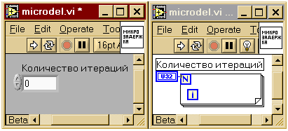

Климентьев К.Е. Микрозадержки на LabVIEW
|
Поставим перед собой задачу: средствами LabVIEW сформировать временную задержку очень малой длительности,
например, 10 мкс. В статье “LabVIEW и реальное время” продемонстрировано, как формировать подобные задержки при помощи “музыкального” канала системного таймера. Здесь будет предложено еще более простое решение.
Будем формировать задержки при помощи обыкновенного пустого цикла (см. рис. 1).

Рис. 1. Виртуальный прибор “Микрозадержка”
Сразу же отметим: при помощи такого подхода нельзя формировать произвольное количество произвольных задержек в произвольные моменты времени. Рано или поздно сработает “стратегический планировщик” Windows и отберет процессорное время у потока, формирующего задержки, невзирая на его высокий приоритет. Тем не менее, сформировать несколько последовательных задержек продолжительностью несколько десятков микросекунд при помощи этого метода вполне можно.
Модель продолжительности выполнения цикла выглядит примерно так:
DT=NґDC+C,
где N – количество итераций цикла;
D C - длительность одной итерации;
C – накладные расходы на передачу управления виртуальному прибору, на организацию цикла и т.п.
Будем считать, что D C=const и C=const (хотя на самом деле это не совсем так).
Соответственно, для организации задержки длительностью D T потребуется количество итераций
N=(DT-C)/DC.
Таким образом, для применения метода нужно знать значения D C и C, соответствующие конкретной версии LabVIEW, конкретной операционной системе и конкретному компьютеру.
Примечание: на самом деле, как продемонстрировано в статье “LabVIEW и реальное время”, это совсем не константы. Но в условиях и ограничениях решаемой задачи этим обстоятельством можно пренебречь.
Для того, чтобы определить D C и C, организуем две произвольные задержки с разными количествами итераций (например, N1=100000 и N2=250000) и измерим их длительности (технику измерений см. в статье Грэхэма Вайдмэна “Изучение LabVIEW с помощью QueryPerformanceCounter” или в моей “Доступ из LabVIEW к DLL”). Получим систему из двух линейных уравнений
N1ґDC+C=DT1;
N2ґDC+C=DT2,
из которой
DC=(DT1-DT2)/(N1-N2);
C=(N1ґDT2-N2ґDT1)/(N1-N2).
Используя этот метод, на 360МГц и 2ГГц машинах удавалось получать 10-микросекундные задержки с погрешностью ± 2 мкс.
(с) Constantin E. Climentieff aka DrMad,
mailto: drmad@dr.com * http://drmad.chat.ru
|